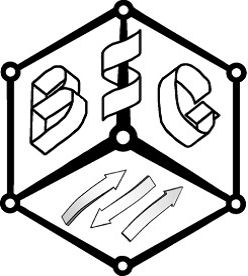
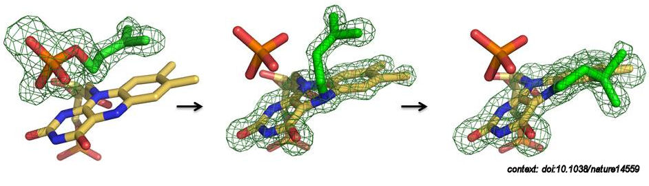
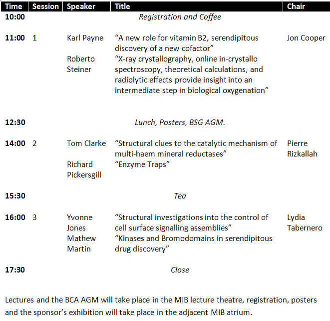
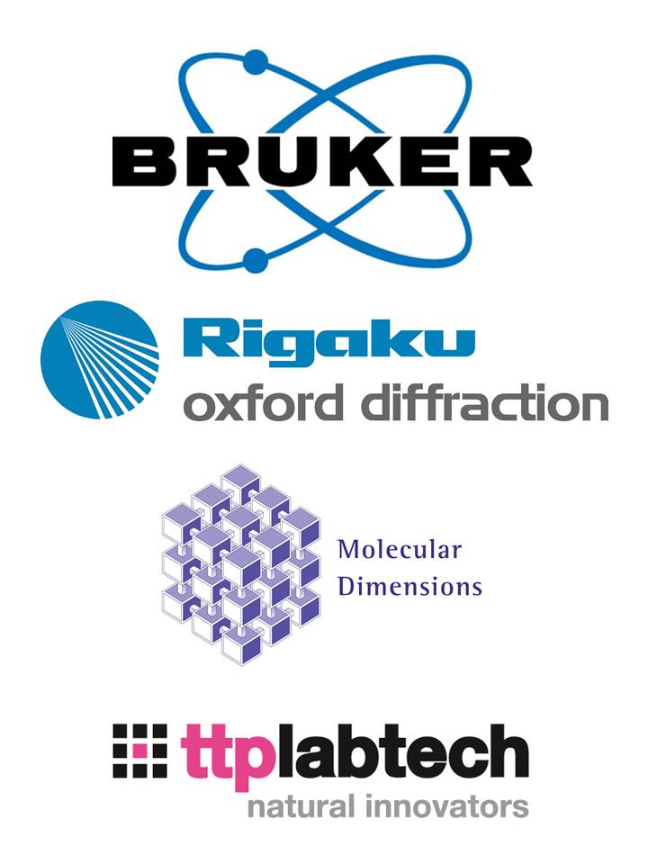

British Crystallographic
Association
Biological Structures
Group
Winter Meeting 2015
Reactive
Macromolecules

Date: Wednesday
16th December 2015
Theme:
The meeting will
explore the latest research in macromolecular catalysis as
revealed by crystallographic structures. The program will include
sessions on
enzymes involved in signalling through to co-factor bearing enzymes and
their
chemical mechanism.
Speakers:
The meeting will
include presentations from the following speakers
Dr. Roberto Steiner, Kings College London
Prof. E. Yvonne Jones, University of Oxford
Dr. Karl Payne, University of Manchester
Dr. Tom Clarke, University of East Anglia
Dr. Mathew Martin, Newcastle University
Prof. Richard Pickersgill, Queen Mary University of London
Programme:

Venue:
Manchester
Institute of Biotechnology
(MIB), 131 Princess St.
Manchester
M1 7DN, building #16 on the University of Manchester campus map.
Format:
The one day meeting
will begin at 11:00 (with registration from 10:00) and
finish by 17:30. An exhibition and poster session will be held during
breaks.
All presentations will be in the MIB Lecture Theatre with lunch and
refreshments served
in the adjacent Atrium. Public
car parking
facilities can be found close to the MIB on Charles St. The
MIB is within easy access of mainline railway stations, directions from
each station to
the MIB can be accessed from below:
Walking
from Piccadilly station
Walking
from Oxford Road station
Registration:
Standard rate £65.00;
Concession rate (student, retired and unwaged)
£47.50, including lunch, refreshments and membership of the British
Crystallographic
Association.
Posters:
There will be an
opportunity to present posters in the MIB Atruim: Those
wishing to present should prepare a one page pdf file comprising a
title; author list
(with presenter underlined); presenter e-mail address (the one used
when registering);
abstract text (limit 250 words) and optionally one figure and up to 3
citations.
E-mail this document as an attachment to: bca.bsg2015.at.gmail.com,
replacing the ".at." with "@".
Spnsors:
We are grateful for
the support of the folllowing organizations or companies:
